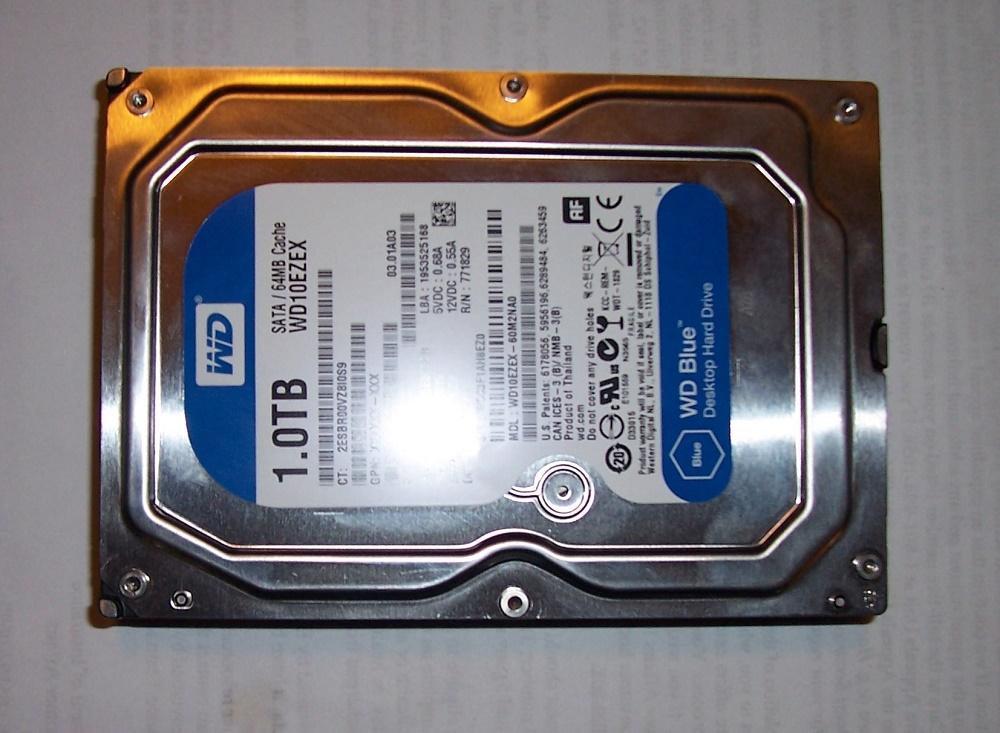
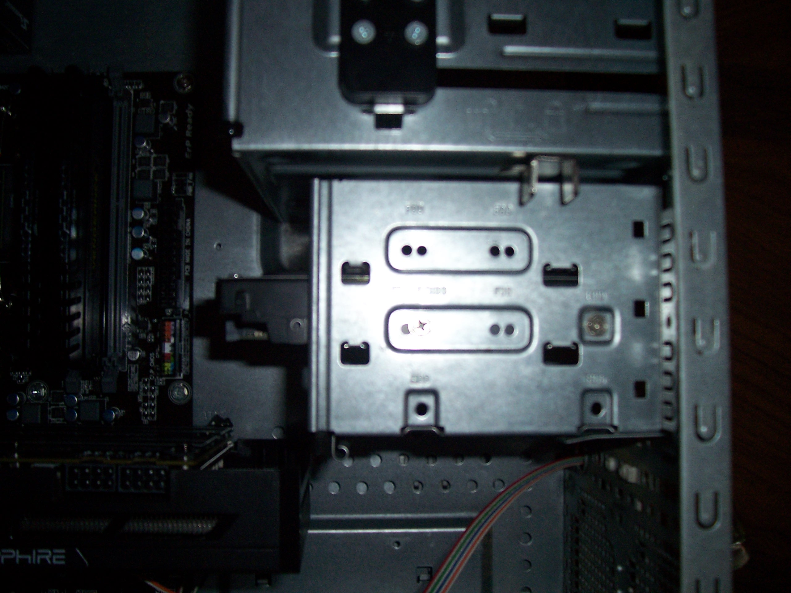
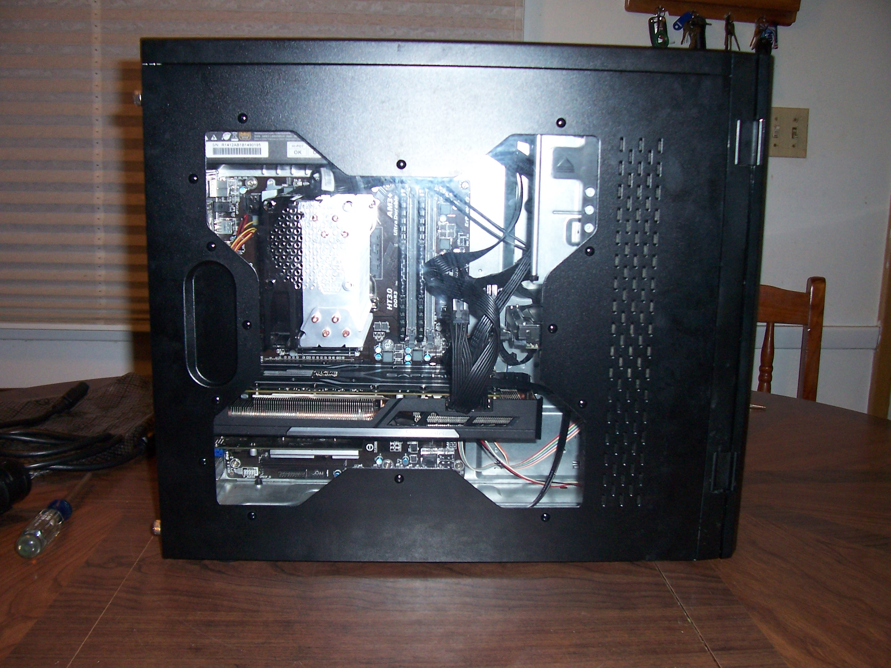

As most people know, a computer's hard drive holds the operating system (Windows, Linux, etc.) and whatever programs and files the user has amassed. The technology behind hard drives is pretty mature, so the sizes and connections are blessedly standardized. There are two main form factors for hard drives. In a desktop, 3.5 inch is the usual for traditional hard drives, while most of the newer solid state drives use a 2.5 inch form factor. Most new computer cases will include slots/bays for both, and adapters can be purchased cheaply to mount a 2.5 inch drive into a 3.5 inch bay. This guide will demonstrate installing the more common 3.5 inch form factor.
Since almost every drive of any kind sold nowadays will use the SATA standard for cables and power plugs, this guide will assume you're using these as well. Lets get started. And in case you were wondering, solid state drives are both much faster and much more expensive than traditional hard drives.

All platter based, non ssd hard drives look about the same. The label is all that changes, so yours will appear very similar.
To install it, we simply slide it into its slot in the case and screw it in. Couldn't be easier. Heres a pic of ours installed.

If you've followed this guide from start to finish, congratulations, you're done building your new PC! I hope you found it a lot more straight forward than you thought, and I sincerely hope this guide made it that much easier for you. From here, you just connect all the power plugs. They only fit the correct device in the correct orientation, so luckily its physically impossible to mess this step up.
Heres how ours turned out

Looks great, we got quality components, and saved a bit of money by installing them ourselves. Our system is also completely upgradeable, unlike most every pre-built computer. I hope you found this guide helpful, and if you didn't, feel free to let me know why with some feedback. Remember, there is a wealth of sources for help on building your PC. I'm glad you chose mine, but remember if you encounter problems to check out some other guides and faqs available on the web.
Now fire your new computer up, and welcome to the lifelong hobby of computer building!
Homemade Logic
Matthew Buchanan